Data Types in CICore¶
Versions
Quick Reference
-
class
v2_0.Types.MediaTypeProperty¶ Additional optional properties for MediaType as described by IANA.
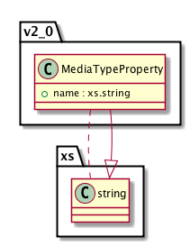<xs:complexType xmlns:xs="http://www.w3.org/2001/XMLSchema" name="MediaTypeProperty"> <xs:simpleContent> <xs:extension base="xs:string"> <xs:attribute name="name" type="xs:string" use="required"> </xs:attribute> </xs:extension> </xs:simpleContent> </xs:complexType>
-
class
v2_0.Types.MediaType¶ Value drawn from the value space of IANA Media Types ( http://www.iana.org/assignments/media-types/media-types.xhtml ). When specified, indicates the IANA Media Type (aka MIME-Type) of the object. The name attribute MUST include the media type and subtype (e.g. text/csv). The media type value is not case sensitive.
Any required media type parameters must be provided, and optional parameters may be specified. There are no explicit constraints on the name of media-type properties or their values, however they SHOULD conform to media type optional and required parameters as specified in the respective media type RFC.
-
property¶ Type:
v2_0.Types.MediaTypePropertyMedia-type parameter(s) as specified by the respective RFC for the media-type.
-
name¶ Type: xs.string
The value of the media-type specified as a required ‘name’ attribute of the mediaType element.
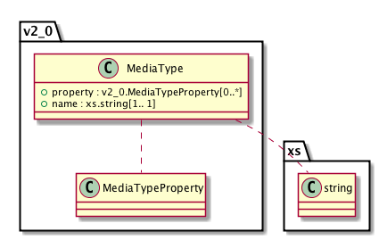<xs:complexType xmlns:xs="http://www.w3.org/2001/XMLSchema" name="MediaType"> <xs:sequence> <xs:element name="property" type="d1_v2.0:MediaTypeProperty" minOccurs="0" maxOccurs="unbounded"> </xs:element> </xs:sequence> <xs:attribute name="name" type="xs:string" use="required"> </xs:attribute> </xs:complexType>
-
-
class
v2_0.Types.SystemMetadata¶ Extends
Types.SystemMetadataSystem metadata in DataONE APIs version 2.0 extends the
types.SystemMetadatadefinition of version 1.x by adding seriesId, mediaType, and fileName elements. Each of these are optional, so Version 1.x System Metadata is compatible with Version 2.x, though not vice-versa.-
seriesId¶ Type:
Types.IdentifierThe seriesId is an optional, unique Unicode string that identifies an object revision chain. A seriesId will resolve to the latest version of an object. A seriesId can not appear in any other revision chain.
The values used for seriesId must be unique within DataONE and cannot be the same as the primary identifier of an object.
The same encoding rules used for identifier values apply to seriesId values.
-
mediaType¶ Type:
v2_0.Types.MediaTypeWhen specified, indicates the IANA Media Type (aka MIME-Type) of the object. When specified, this value overrides the default value specified in the version 2.0 ObjectFormat structure. The value should include the media type and subtype (e.g. text/csv). The mediaType value is not case sensitive.
The purpose of this value is to provide more detailed information about the specific media type of the associated object than may be available through the associated ObjectFormat.
When specified, the mediaType value here overrides the value recorded in the referenced
ObjectFormat.This value SHOULD be set by the content creator. It MAY be set by any receiving agent if the value is not already set, the value in the ObjectFormat is less specific, and a correct value is specified elsewhere such as by a HTTP Content-Type parameter.
This value MAY be changed to correct an erroneous entry.
-
fileName¶ Type: xs.string
Optional though recommended value providing a suggested file name for the object. Values should conform to cross platform file naming conventions.
This value SHOULD be set by the content creator.
This value MAY be set by any receiving agent Changing the value is discouraged once set, unless by the authoritative Member Node of content owner.
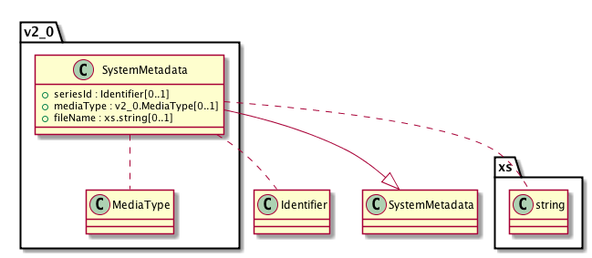<xs:complexType xmlns:xs="http://www.w3.org/2001/XMLSchema" name="SystemMetadata"> <xs:complexContent> <xs:extension base="d1:SystemMetadata"> <xs:sequence> <xs:element name="seriesId" type="d1:Identifier" minOccurs="0"> </xs:element> <xs:element name="mediaType" type="d1_v2.0:MediaType" minOccurs="0"> </xs:element> <xs:element name="fileName" type="xs:string" minOccurs="0"> </xs:element> </xs:sequence> </xs:extension> </xs:complexContent> </xs:complexType>
-
-
class
v2_0.Types.NodeList¶ A list of
v2_0.Types.Nodeentries returned byCNCore.listNodes().NodeList is described in
NodeList.-
node¶ Type:
v2_0.Types.Node
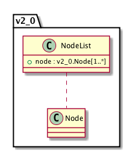<xs:complexType xmlns:xs="http://www.w3.org/2001/XMLSchema" name="NodeList"> <xs:sequence> <xs:element xmlns:d1="http://ns.dataone.org/service/types/v1" xmlns:d1_v1.1="http://ns.dataone.org/service/types/v1.1" xmlns:d1_v2.0="http://ns.dataone.org/service/types/v2.0" name="node" type="d1_v2.0:Node" maxOccurs="unbounded" minOccurs="1"/> </xs:sequence> </xs:complexType>
-
-
class
v2_0.Types.Node¶ Extends
Types.NodeExtends the Version 1.x
Types.Nodeby adding an optional unbounded parameter entry providing additional simple metadata relevant to a Node.-
property¶ Type:
v2_0.Types.PropertyAllows additional attributes be added to the Node document as needed.
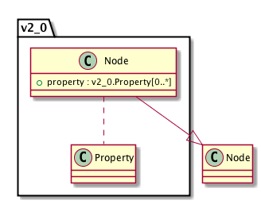<xs:complexType xmlns:xs="http://www.w3.org/2001/XMLSchema" name="Node"> <xs:complexContent> <xs:extension base="d1:Node"> <xs:sequence> <xs:element name="property" type="d1_v2.0:Property" minOccurs="0" maxOccurs="unbounded"> </xs:element> </xs:sequence> </xs:extension> </xs:complexContent> </xs:complexType>
-
-
class
v2_0.Types.Property¶ Additional Property elements can be included to describe the Node in more detail. Some properties will come from controlled vocabularies indicated by the type attribute, while others will be free-form key value pairs.
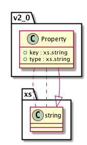<xs:complexType xmlns:xs="http://www.w3.org/2001/XMLSchema" name="Property"> <xs:simpleContent> <xs:extension base="xs:string"> <xs:attribute name="key" type="xs:string" use="required"> </xs:attribute> <xs:attribute name="type" type="xs:string" use="optional"> </xs:attribute> </xs:extension> </xs:simpleContent> </xs:complexType>
-
class
v2_0.Types.ObjectFormat¶ Extends
Types.ObjectFormatExtends Version 1.x
Types.ObjectFormatby adding mediaType and extension elements.-
mediaType¶ Type:
v2_0.Types.MediaTypeThe IANA Media Type for this object format.
-
extension¶ Type: xs.string
Suggested file name extension to be used when serializing this type of object to a file. The value should not include the period (.).
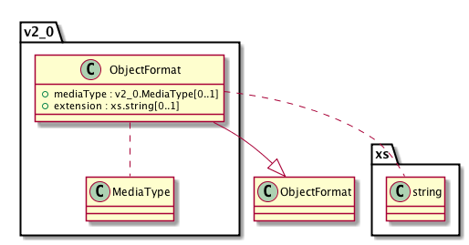<xs:complexType xmlns:xs="http://www.w3.org/2001/XMLSchema" name="ObjectFormat"> <xs:complexContent> <xs:extension base="d1:ObjectFormat"> <xs:sequence> <xs:element name="mediaType" type="d1_v2.0:MediaType" minOccurs="0"> </xs:element> <xs:element name="extension" type="xs:string" minOccurs="0"> </xs:element> </xs:sequence> </xs:extension> </xs:complexContent> </xs:complexType>
-
-
class
v2_0.Types.ObjectFormatList¶ Extends
Types.SliceExtends
Types.ObjectFormatListto provide a list ofv2_0.Types.ObjectFormat.-
objectFormat¶ Type:
v2_0.Types.ObjectFormat
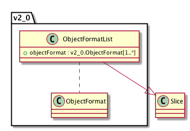<xs:complexType xmlns:xs="http://www.w3.org/2001/XMLSchema" name="ObjectFormatList"> <xs:complexContent> <xs:extension base="d1:Slice"> <xs:sequence> <xs:element xmlns:d1="http://ns.dataone.org/service/types/v1" xmlns:d1_v1.1="http://ns.dataone.org/service/types/v1.1" xmlns:d1_v2.0="http://ns.dataone.org/service/types/v2.0" name="objectFormat" type="d1_v2.0:ObjectFormat" minOccurs="1" maxOccurs="unbounded"/> </xs:sequence> </xs:extension> </xs:complexContent> </xs:complexType>
-
-
class
v2_0.Types.Log¶ Extends
Types.SliceExtends
Types.Logto represent a collection ofv2_0.Types.LogEntryelements, used to transfer log information between DataONE components.-
logEntry¶ Type:
v2_0.Types.LogEntry
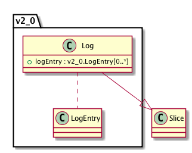<xs:complexType xmlns:xs="http://www.w3.org/2001/XMLSchema" name="Log"> <xs:complexContent> <xs:extension base="d1:Slice"> <xs:sequence> <xs:element xmlns:d1="http://ns.dataone.org/service/types/v1" xmlns:d1_v1.1="http://ns.dataone.org/service/types/v1.1" xmlns:d1_v2.0="http://ns.dataone.org/service/types/v2.0" name="logEntry" type="d1_v2.0:LogEntry" minOccurs="0" maxOccurs="unbounded"/> </xs:sequence> </xs:extension> </xs:complexContent> </xs:complexType>
-
-
class
v2_0.Types.LogEntry¶ Extends
Types.LogEntryby relaxing the value space for the event element.-
entryId¶ Type:
Types.NonEmptyStringA unique identifier for this log entry. The identifier should be unique for a particular node; This is not drawn from the same value space as other identifiers in DataONE, and so is not subject to the same restrictions.
-
identifier¶ Type:
Types.IdentifierThe identifier of the object that was the target of the operation which generated this log entry.
-
ipAddress¶ Type: xs.string
The IP address, as reported by the service receiving the request, of the request origin.
-
userAgent¶ Type: xs.string
The user agent of the client making the request, as reported in the User-Agent HTTP header.
-
subject¶ Type:
Types.SubjectThe Subject used for making the request. This may be the DataONE public user if the request is not authenticated, otherwise it will be the subject of the certificate used for authenticating the request.
-
event¶ Type:
Types.NonEmptyStringA non-empty string indicating the type of event logged. A value from the
Types.Eventenumeration is recommended though no longer required for Version 2.x.
-
dateLogged¶ Type: xs.dateTime
A
Types.DateTimetime stamp indicating when the event triggering the log message ocurred. Note that all time stamps in DataONE are in UTC.
-
nodeIdentifier¶ Type:
Types.NodeReferenceThe unique identifier for the node where the log message was generated.
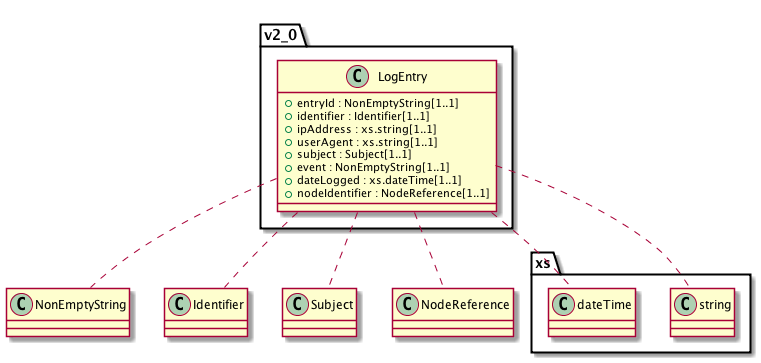<xs:complexType xmlns:xs="http://www.w3.org/2001/XMLSchema" name="LogEntry"> <xs:sequence> <xs:element name="entryId" type="d1:NonEmptyString" minOccurs="1" maxOccurs="1"> </xs:element> <xs:element name="identifier" type="d1:Identifier" minOccurs="1" maxOccurs="1"> </xs:element> <xs:element name="ipAddress" type="xs:string" minOccurs="1" maxOccurs="1"> </xs:element> <xs:element name="userAgent" type="xs:string" minOccurs="1" maxOccurs="1"> </xs:element> <xs:element name="subject" type="d1:Subject" minOccurs="1" maxOccurs="1"> </xs:element> <xs:element name="event" type="d1:NonEmptyString" minOccurs="1" maxOccurs="1"> </xs:element> <xs:element name="dateLogged" type="xs:dateTime" minOccurs="1" maxOccurs="1"> </xs:element> <xs:element name="nodeIdentifier" type="d1:NodeReference" minOccurs="1" maxOccurs="1"> </xs:element> </xs:sequence> </xs:complexType>
-
-
class
v2_0.Types.OptionList¶ A list of options that indicate the possible values for a DataONE service. Each option that can be validly sent to a service is listed, providing the specific key that should be used when interacting with the service, as well as a description of that key that allows API users to understand the usage of the key. For example, an OptionList might contain a list of themes that can be used with the MNView.view service, or for other services that have a configurable but controlled set of parameters.
-
option¶ Type:
Types.NonEmptyStringThe key to be used within an API call to a DataONE service, including a description of the key and its impact on the service. For example, a key ‘default’ can be provided as the theme for the MNView.view service. Keys must not contain characters that will need to be URL escaped.
-
key¶ Type: xs.string
A value that can be used with a DataONE service. Key values must not contain any characters that need to be URL escaped, and should be short and informative.
-
description¶ Type: xs.string
The description of an option, indicating its intended use and impact on a DataONE service invocation.
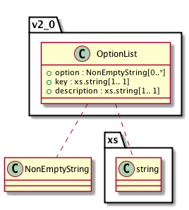<xs:complexType xmlns:xs="http://www.w3.org/2001/XMLSchema" name="OptionList"> <xs:sequence> <xs:element name="option" type="d1:NonEmptyString" minOccurs="0" maxOccurs="unbounded"> </xs:element> </xs:sequence> <xs:attribute name="key" use="required" type="xs:string"> </xs:attribute> <xs:attribute name="description" use="required" type="xs:string"> </xs:attribute> </xs:complexType>
-